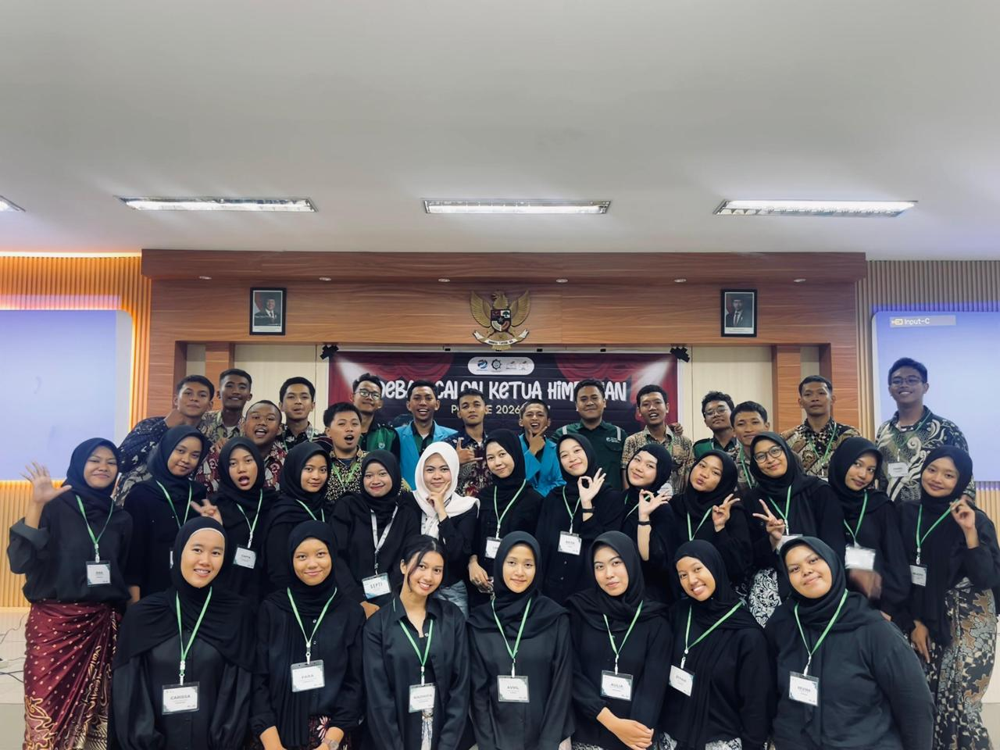

Pengalaman

PKL Sekolah Menengah Kejuruan
Memiliki pengalaman magang di Jurusan Kimia FMIPA UNESA saat menempuh pendidikan SMK. Selama magang, memperoleh pengalaman dalam lingkungan laboratorium, membantu kegiatan praktikum, serta memahami prosedur kerja dan kedisiplinan di dunia akademik dan penelitian.

Green Cup 2026
Menjadi bagian dari Organizing Committee (OC) pada divisi acara dalam kegiatan Green Cup. Bertugas membantu penyusunan konsep acara, koordinasi jalannya kegiatan, serta memastikan setiap rangkaian acara berjalan sesuai susunan yang telah direncanakan.

KPU Prodi 2026
Berpengalaman menjadi bagian dari panitia KPU sebagai anggota Organizing Committee (OC) pada divisi perlengkapan. Bertanggung jawab dalam menyiapkan, mengelola, dan memastikan seluruh kebutuhan perlengkapan kegiatan tersedia dengan baik demi kelancaran acara.